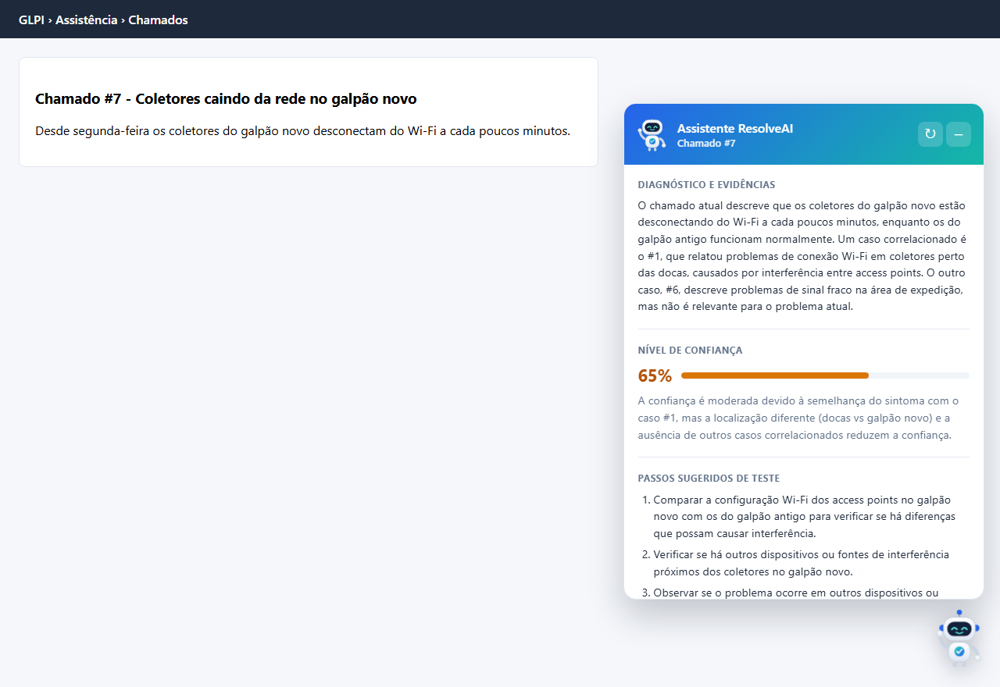

Projeto em destaque · IA generativa
ResolveAI
Assistente de IA integrado ao GLPI que lê o chamado aberto, busca chamados parecidos já resolvidos (RAG com ChromaDB) e sugere diagnóstico, nível de confiança e passos de teste. A IA é gratuita e local (Ollama) por padrão, e o projeto tem painel de acompanhamento para administradores e uma arquitetura independente da ferramenta de chamados.
- Python
- FastAPI
- RAG
- ChromaDB
- Ollama · Claude
- GLPI
- Docker
